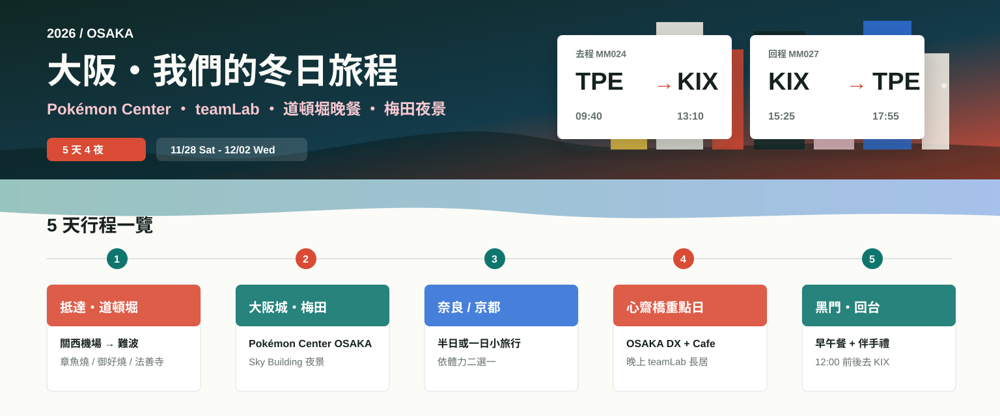

Day 1 / 抵達大阪
關西機場 → 難波 → 道頓堀吃第一餐
先不要塞太滿，把入境、交通、寄放行李和第一晚的胃口留好。

DAY BY DAY
Day 1 / 抵達大阪
先不要塞太滿，把入境、交通、寄放行李和第一晚的胃口留好。
PICKS
在心齋橋大丸，本趟最適合排成一整個下午。Cafe 通常需要預約，建議一開放就搶。
在梅田大丸，適合跟梅田 Sky Building、LUCUA、Nintendo OSAKA 一起排。
大阪有 teamLab，在長居植物園，是夜間戶外展。11 月底天黑早，排晚餐前後都順。
適合上午散步拍照，不一定要進天守閣；可以接森之宮或谷町四丁目附近咖啡。
第一晚或最後一晚都很對：章魚燒、串炸、拉麵、居酒屋都集中，晚上氣氛最好。
如果想離開大阪一天，奈良比較輕鬆；京都更漂亮但更吃體力，建議二選一。
FOOD ROUTE
第一晚最穩。先吃章魚燒或御好燒，再去法善寺橫丁散步，最後留一點胃給宵夜拉麵。
CHECKLIST